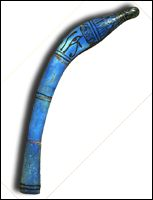
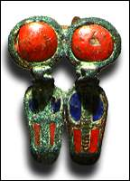
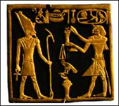

|

Throw stick
Conservator
This object is made of glazed composition. It is in good shape and the glaze is still quite shiny. It is a fine example of the blue glaze that was often used in ancient Egypt.
Curator
This throw stick is a symbolic object that would have been carried in a festival. It looks like the throw sticks that were used in hunting.
Archaeologist
This object was found in the third layer of sand in Area D. The long straight shape could be seen even before they cleared the sand away.

Uraeus
Conservator
This object is made of bronze and is decorated with enamel. The bronze is now a green colour. The red and blue enamel has lasted well. There are only a couple of patches missing, and some surface scratches.
Curator
This object represents two cobras ready to strike. They represent the cobra goddess of Lower Egypt, Wadjyt.
Archaeologist
"I could not believe my eyes when I looked down into the digging pit and saw a hint of bronze, turned green with age, sticking out of the sand. We gently dug around it and finally got it out..."
 Gold flies
Gold flies
Conservator
This object is one of a pair. It was meant to hang on a chain, and still has small loops on top. It is made of gold and is carved to look like an insect.
Curator
This object would have been given as an award for good military service to the pharaoh. The ancient Egyptians believed that people who kept on fighting - even when they were pushed away - were good soldiers. This object looks like an insect that keeps coming back even when it is swatted away.
Archaeologist
"...one day as I sifted through some sand from the tomb, I found a pair of tiny gold flies. They must have been dropped by a tomb robber thousands of years ago and had been lying on the floor of the tomb ever since."

Gold plaque
Conservator
This object was probably carved from a thin sheet of gold. It is very delicate, and I think that it should be mounted on a block of wood covered with black velvet so that it does not break.
Curator
This plaque shows a scene with the pharaoh and the god Atum. The pharaoh, with his cartouche above his head holds out a pot towards Atum. Atum holds the ankh in one hand and the was-sceptre in the other.
Archaeologist
The small, gold plaque was found in the seventh layer of the site. It was quite delicate, and had to be carried out on a tray.
These are the experts:
|
Conservator
who writes about the materials used to make the object and how to take care of it.
Curator
who writes about the history of the object.
Archaeologist
who writes about when and where the objects was found.
|
|